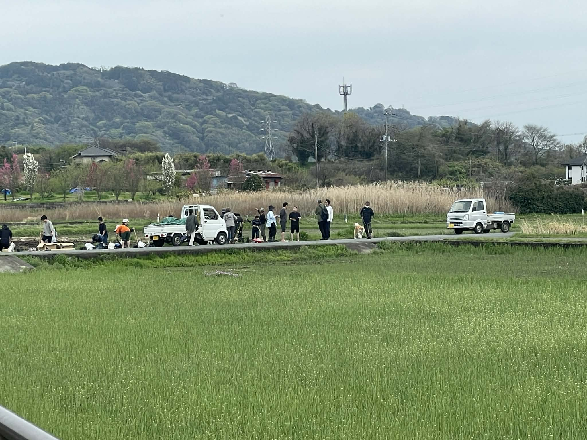
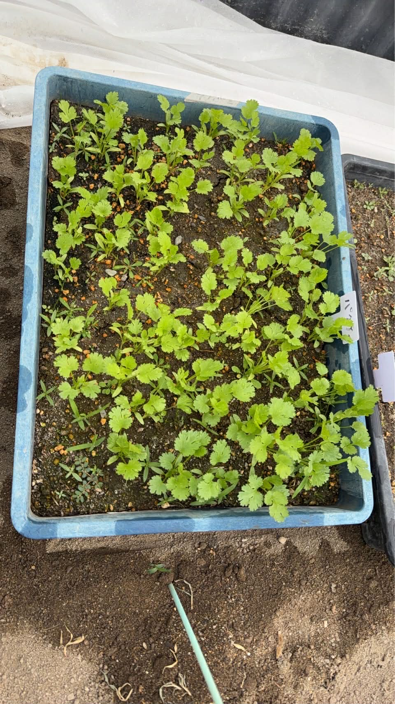
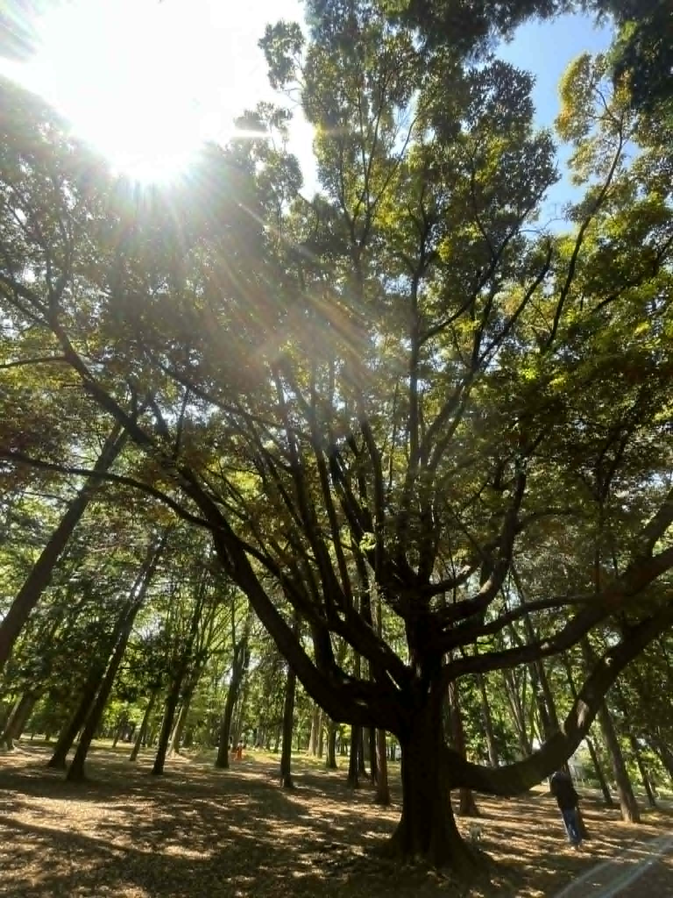
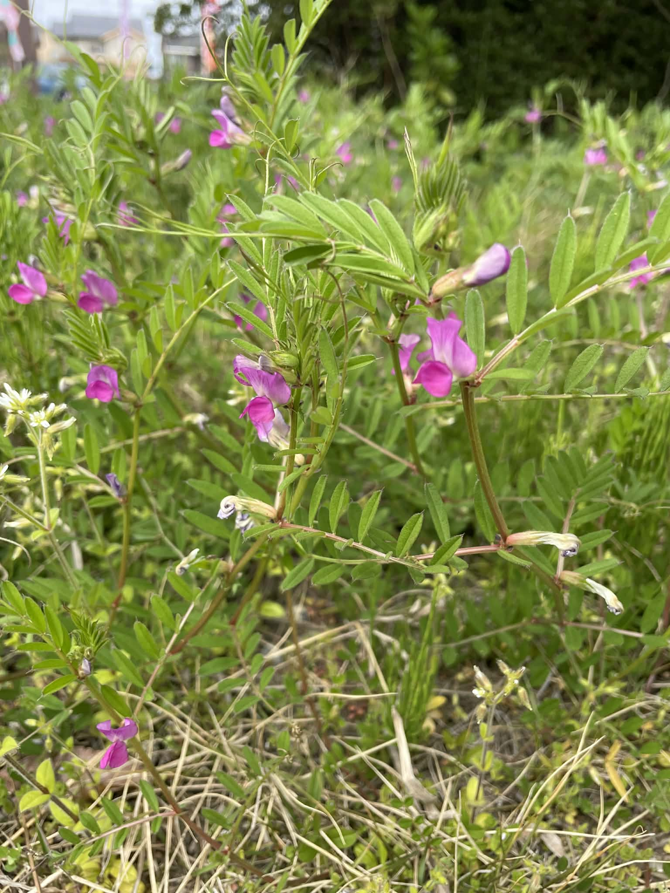
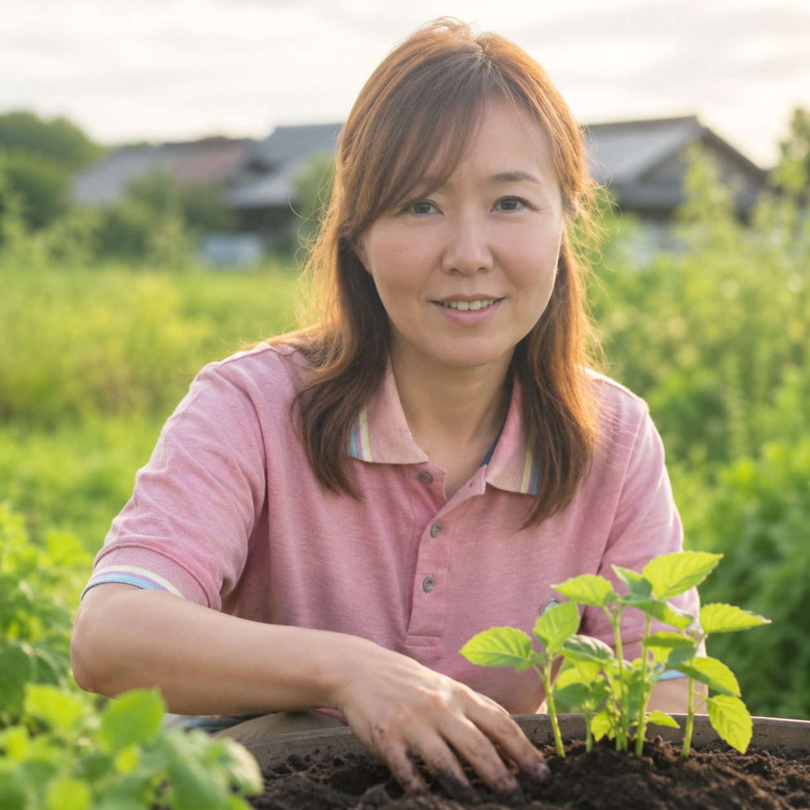

自然栽培体験・リトリート
土に触れ、自然のリズムの中で過ごす体験を通じて、自分自身の内面と向き合う時間をつくります。
株式会社tabekifuは、自然栽培の考え方を軸に、農業体験・リトリート、人事・組織サポート、プロジェクトやイベントの企画運営を行っています。
農薬や化学肥料に頼らず、土本来の力を引き出す自然栽培。その哲学は、人が本来持っている資質を活かすことにも通じています。tabekifuは、自然栽培を農業だけでなく、人の生き方・働き方・社会づくりへ広げていきます。

私たちの身体は、水、土壌から届くミネラル、植物が生み出す酸素、微生物との関係の中で成り立っています。心もまた、自然とのつながりや、社会に役立っているという実感によって整いやすくなります。だからtabekifuは、自然栽培を単なる農法としてではなく、「人は自然の一部である」ことを体験として取り戻す入口と考えています。土に触れ、食を育み、人と自然の循環を感じること。その実感を、個人のリトリート、組織づくり、地域プロジェクト、資質を活かす対話へ広げていくために、4つの事業領域を置いています。
土に触れ、自然のリズムの中で過ごす体験を通じて、自分自身の内面と向き合う時間をつくります。
個人の資質や役割に着目し、一人ひとりが本来の力を発揮できる組織づくりを支援します。
自然栽培、食、地域、ウェルビーイングをテーマにした企画の設計から運営までをサポートします。

Natural Farming
自然栽培とは、農薬・化学肥料・除草剤を使わず、土本来の力と自然の循環を活かして作物を育てる農法です。
tabekifuは、自然栽培を単なる農法としてではなく、人と社会のあり方を見つめ直すための考え方として捉えています。土を整えること。余計なものを足さないこと。本来の力を引き出すこと。その思想は、農業だけでなく、暮らし、働き方、組織づくりにもつながります。
土の力、自然の循環、生物多様性、環境負荷の低減。自然栽培には、食と農だけではなく、人の気づきや社会の再生につながる視点があります。

目に見える作物だけではなく、土、微生物、光、水、季節の巡りを含めて環境を捉えます。
何かを足しすぎるのではなく、そのものが持つ力が働く環境を整えることを大切にします。

自然栽培の思想を、暮らし、働き方、組織づくり、地域や社会のプロジェクトへ応用します。
Profile / Company
自然栽培は、「植物を自分の思い通りに育てる技術」ではないと感じています。植物の生命力を信じ、土の力を信じ、見えない微生物を信じ、季節を信じ、待つ。そこには、自分が支配者ではないことを受け入れる営みがあります。祈りも、とても似ています。祈るとき、人は「自分ではどうにもできないこと」を受け入れます。だから祈りには謙虚さがあります。自然栽培にも、同じ謙虚さがあります。AWE体験も、大自然に圧倒され、「謙虚であれ」と受けとる体験です。私は、その感覚を大切にしながら、土を通じて人と社会を整える活動を続けています。

坂入千佳。新潟県新潟市出身。武蔵大学で経営組織論を学び、卒業後は事務職、秘書、ブリーダー、医療専門誌の編集など、多様な分野で経験を積む。現在は一般社団法人シゼンタイ理事、株式会社tabekifu代表として、自然栽培を通じた体験、対話、企画運営を行い、人と社会のウェルビーイング向上に取り組んでいます。
株式会社tabekifuは、自然栽培を軸に、農業体験・リトリート、人事・組織サポート、プロジェクトやイベントの企画運営を行う共創プロジェクトコンサルティングカンパニーです。
Instagramの投稿を起点に、tabekifuの活動とまなざしを時系列で表示します。
Contact
自然栽培体験・リトリートへの参加相談、法人向けの人事・組織サポート、研修、プロジェクト企画、取材・登壇・コメント依頼など、お気軽にお問い合わせください。
Instagramで問い合わせる